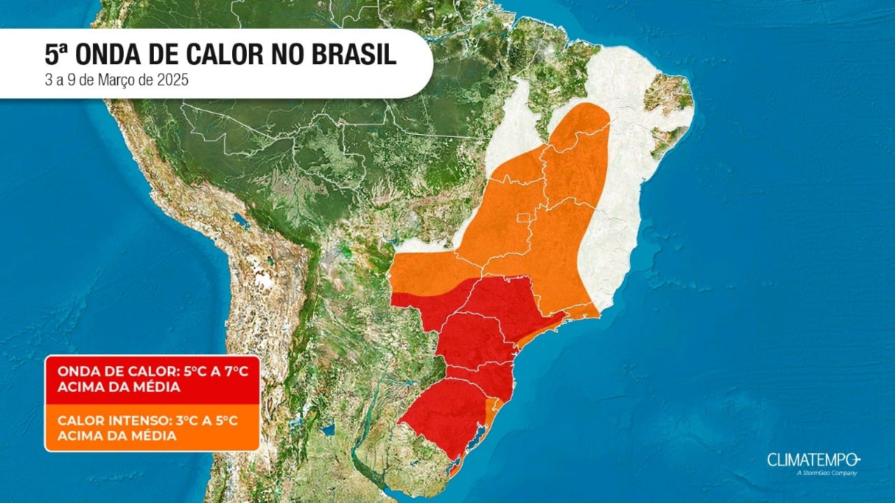

<!DOCTYPE html>
<html lang="pt-br">
<head>
    <title>Projeto Agrinho</title>
    <meta charset="UTF-8">
    <meta name="viewport" content="width=device-width, initial-scale=1.0">
</head>
<body>
    
</body>
</html>
<!DOCTYPE html>
<html lang="pt-br">
<head>
    <meta charset="UTF-8">
    <meta name="viewport" content="width=device-width, initial-scale=1.0">
    <title>Cuidados para ter durante as ondas de calor no Paraná</title>
    <link rel="stylesheet" href="https://cdn.jsdelivr.net/npm/bootstrap@5.3.0/dist/css/bootstrap.min.css">
    <link rel="stylesheet" href="style.css">
</head>
<body>
    <header class="container text-center">
        <h1>Cuidados Para Ter Durante As Ondas de Calor no Paraná</h1>
        
        <p>A Secretaria de Estado da Saúde (Sesa) reforça alguns cuidados a serem tomados em dias de muito calor e de umidade relativa do ar baixa. As medidas podem evitar a fadiga, desidratação ou ainda queda da pressão arterial.

            De acordo com a pasta, as recomendações valem para qualquer pessoa. Porém, o cuidado com idosos e crianças deve ser ainda maior, reforça a secretaria.</p>
        <nav>
            <ul>
                <li><a href="#Cuidados">Cuidados</a></li>
                <li><a href="#consequencias">Consequências</a></li>
                <li><a href="#conclusao">Conclusão</a></li>
            </ul>
        </nav>
    </header>

<main class="container text-center">
    <section id="Cuidados" class="conteudo">
        <h2>Veja como se proteger no calor</h2>
        <article>
            <ul>
            <li>evite ficar no sol, principalmente das 10 às 16 horas;</li>
            <li>use sempre protetor solar, independentemente do horário;</li>
            <li>beba água. Caso tenha dificuldade em ingerir água pura, incluir 
                rodelas de limão, laranja ou hortelã, pode ser um incentivo;
                 utilizar alarmes ou aplicativos que enviam avisos sonoros para lembrar de tomar água;</li>
            <li>consuma alimentos in natura, evitando os ultraprocessados. Frutas, verduras, 
                legumes, arroz e feijão em geral têm alto teor de água,
                 diferente dos ultraprocessados, que são ricos em sódio, aditivos e escassos em água.
            </li>
            <li>tome banhos gelados;
            </li>
            <li>use ventiladores;</li>
            <li>evite exercícios físicos ao ar livre em horários muito quentes.</li>
            <p>As árvores absorvem a água da chuva e ajudam na infiltração no solo. Sem vegetação, a água escoa rapidamente, causando enchentes.</p>
            </ul>
        </article>

        <article>
            <h3>Calor excessivo e ilhas de calor</h3>
            <p>O desmatamento reduz a evapotranspiração das plantas, elevando a temperatura das cidades e aumentando o efeito das ilhas de calor.</p>
        </article>

        <article>
            <h3>Redução da qualidade de vida</h3>
            <p>A destruição das florestas impacta a biodiversidade, aumenta a poluição e reduz o contato com áreas verdes, afetando a saúde mental e respiratória.</p>
        </article>

        <a href="https://youtu.be/bbJtbv2M8BU?si=3iy9L3atYRf3QVGZ" class="cta-button" target="_blank">Como impacta o mundo? <i class="fa-solid fa-arrow-up-right-from-square" style="color: var(--text-color);"></i></a>
    </section>

    <section id="consequencias" class="conteudo">
        <h2>Consequências</h2>
        <ul>
            <li>Aumento das enchentes e erosão do solo</li>
            <li>Aumento das temperaturas e mudanças climáticas</li>
            <li>Perda da biodiversidade</li>
            <li>Redução da qualidade de vida nas cidades</li>
            <li>Agravamento de problemas de saúde</li>
            <li>Impacto na economia de comunidades locais</li>
        </ul>
    </section>

     <section id="conclusao" class="conteudo">
    <h2>Conclusão</h2>
    <p>
        As ondas de calor são um problema sério e cada vez mais comum. Adotar cuidados simples no dia a dia — como hidratação, proteção solar e alimentação saudável — pode evitar riscos graves à saúde, especialmente em grupos mais vulneráveis.
    </p>
    <p>
        Além disso, preservar o meio ambiente é essencial. O desmatamento e a destruição de áreas verdes agravam o calor nas cidades e afetam diretamente a qualidade de vida. Por isso, a conscientização ambiental e a participação da sociedade em ações sustentáveis são fundamentais.
    </p>
    <p>
        Plantar árvores, proteger a natureza e adotar hábitos mais conscientes são atitudes que, somadas, fazem diferença no enfrentamento das mudanças climáticas. O cuidado com a saúde começa também com o cuidado com o planeta.
    </p>
    
    <iframe width="560" height="315" 
        src="https://www.youtube.com/embed/bbJtbv2M8BU?si=3iy9L3atYRf3QVGZ" 
        title="Paraná 40 graus: onda de calor atinge sul, temperaturas sobem 5 graus Celsius por ao menos seis dias" 
        frameborder="0" 
        allow="accelerometer; autoplay; clipboard-write; encrypted-media; gyroscope; picture-in-picture" 
        allowfullscreen>
    </iframe>
</section>

</main>

<footer>
    <a href="https://github.com/biancakrambeck/BiancaAgrinho.git" class="cta-footer">Faça parte dessa causa!</a>
    <p>2025 | @biancakrambeck</p>
</footer>
</body>
</html>
